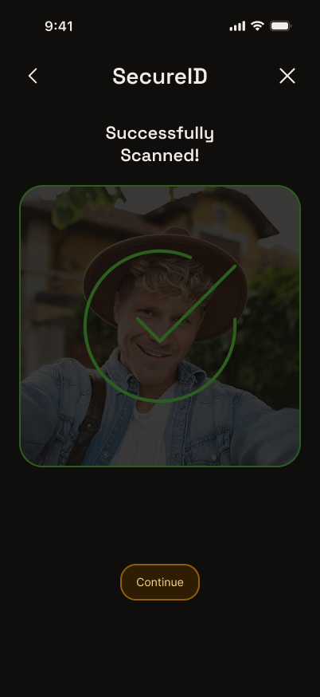
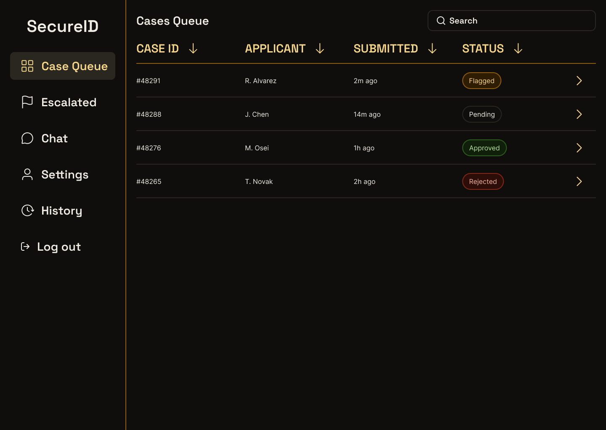
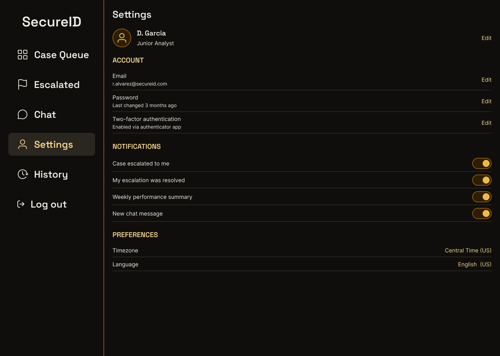
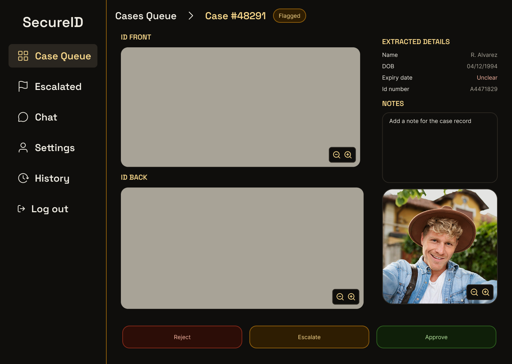
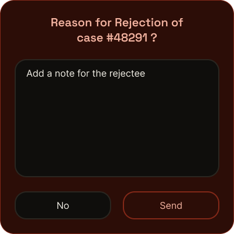
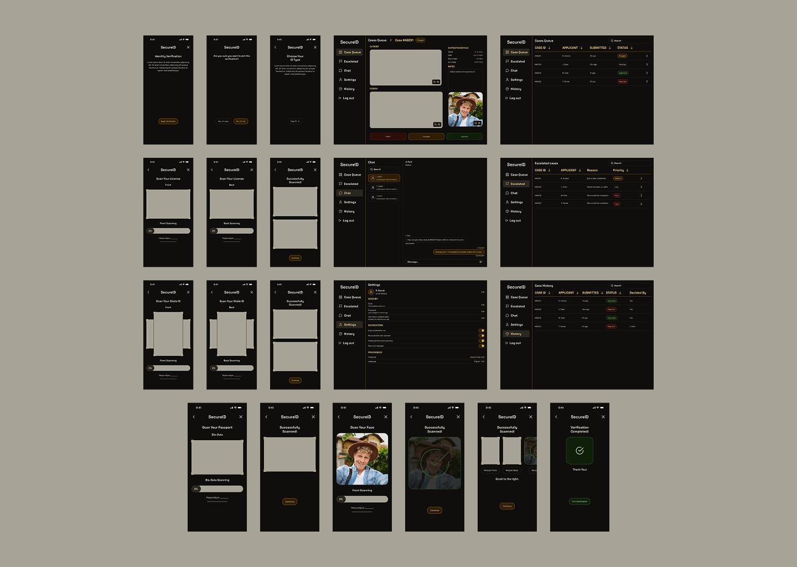

SecureID
A self-initiated identity-verification platform that has to work for two very different people on the same flow: an everyday user who just wants to prove who they are, and an internal analyst who has to review the edge cases fast.
One flow had to calm a nervous user and speed up a busy analyst
SecureID verifies identity through document capture, biometric checks, and manual case review, the step where most products break down. I treated it as two connected problems: a verification flow that had to feel calm and trustworthy, and an analyst dashboard that had to feel fast and unambiguous, both built on one shared design system.


Dense screens made users anxious, so I gave each screen one job
Two decisions mattered most, here's the reasoning behind each. The first was about the person verifying.

Analysts triage by risk, so the list became sortable queues
The second decision was about the analyst, who needs to read a queue before opening a case.

Too many actions slowed analysts, so I cut them to three



Fewer visible choices per case was a deliberate trade for analyst throughput: less time spent interpreting the screen is less time spent per case, and the overlay pattern keeps that speed without hiding anything an analyst needs.
Four personas kept both interfaces grounded
Four representative perspectives kept the verification flow and analyst workspace grounded: Riley needs calm, predictable guidance. Jordan values speed across devices. Casey needs fast access to the details that affect a decision. Morgan needs a clear hierarchy so nothing important gets buried.
Paper, wireframe, then hi-fi: structure settled before style
The verification flow moved through three fidelities: paper sketches to find the structure, low-fidelity wireframes to settle the screens, then high-fidelity screens built on the shared token system.

One token system keeps both interfaces consistent
Instead of designing the user flow and analyst dashboard as separate products, I built both on one shared token system, a neutral base plus accent, success, and error colors in five tints each, so the same visual language reads as calm to a verifying user and fast to a scanning analyst.
- Five-stop color ramps (100 → 900) for accent, positive, and negative feedback
- Status color mapped consistently to meaning across every button, badge, and banner
- One shared type and spacing scale across both interfaces

Outcome: a defensible process and one system for two audiences
As a solo, self-initiated project, the goal was a defensible process end to end, not a shipped metric. What I can point to concretely:
The lesson I've carried into my internship work since: designing for two audiences on one flow means deciding, explicitly, which parts of the system flex per audience and which never do.
Next, I would test the verification flow with five real users to see where they hesitate, and time how long analysts take to triage a queue.